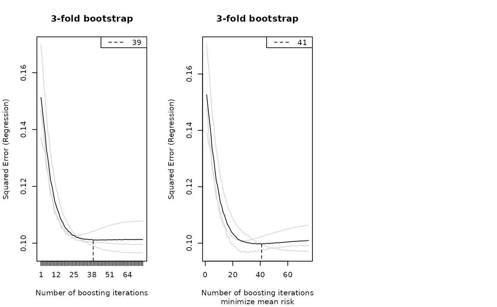
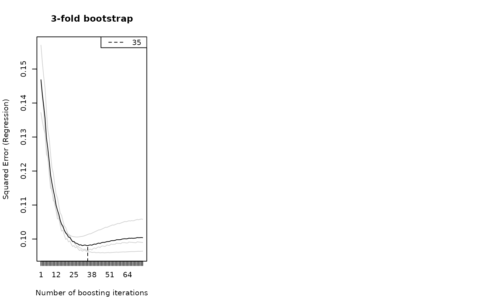
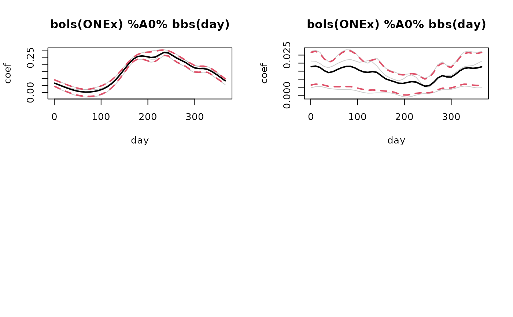
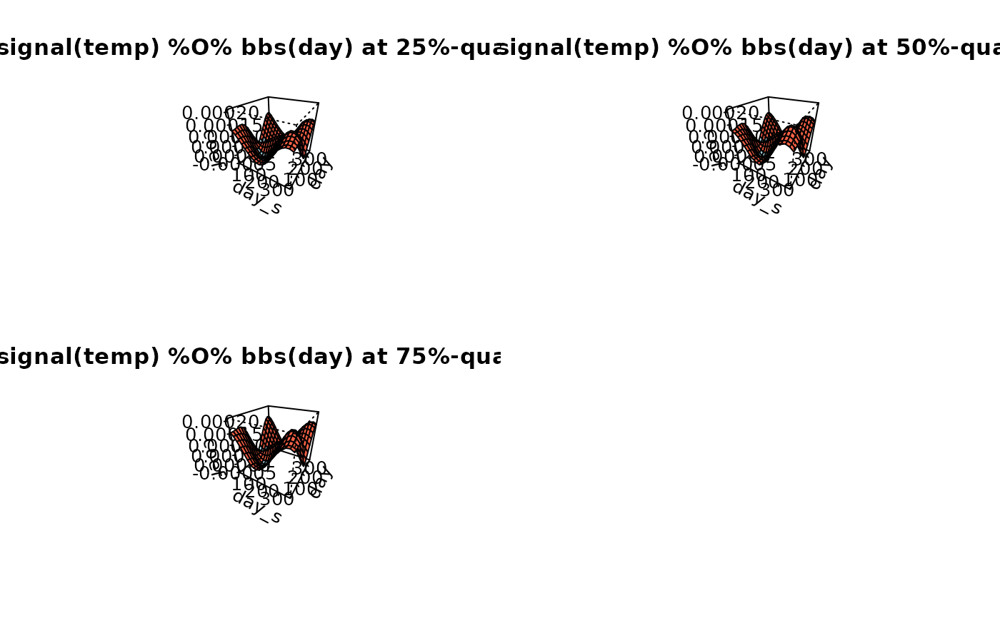
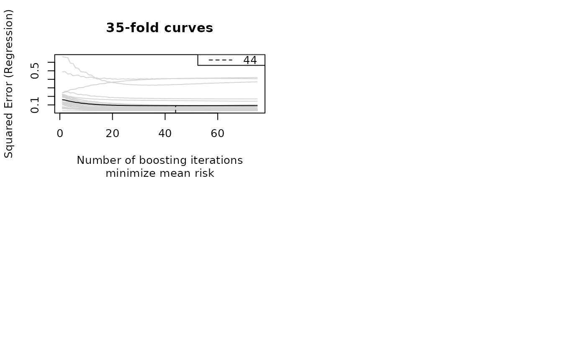
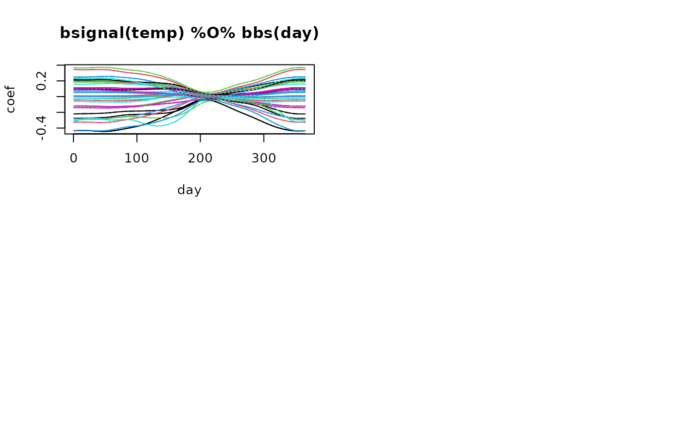
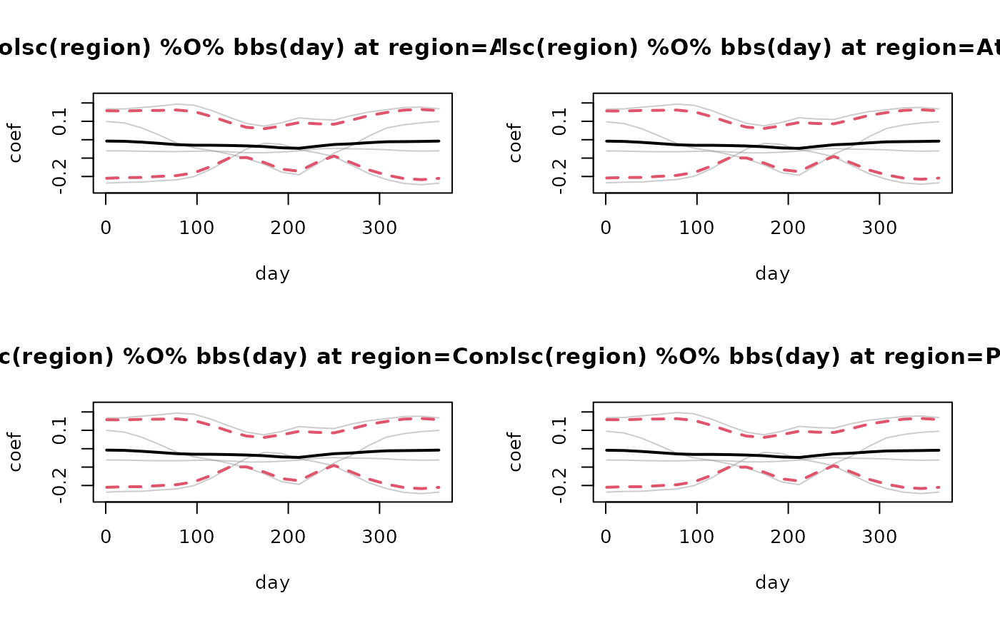

DEPRECATED!
The function validateFDboost() is deprecated,
use applyFolds and bootstrapCI instead.
Arguments
- object
fitted FDboost-object
- response
optional, specify a response vector for the computation of the prediction errors. Defaults to
NULLwhich means that the response of the fitted model is used.- folds
a weight matrix with number of rows equal to the number of observed trajectories.
- grid
the grid over which the optimal number of boosting iterations (mstop) is searched.
- fun
if
funisNULL, the out-of-bag risk is returned.fun, as a function ofobject, may extract any other characteristic of the cross-validated models. These are returned as is.- getCoefCV
logical, defaults to
TRUE. Should the coefficients and predictions be computed for all the models on the sampled data?- riskopt
how is the optimal stopping iteration determined. Defaults to the mean, but median is possible as well.
- mrdDelete
Delete values that are
mrdDeletepercent smaller than the mean of the response. Defaults to 0 which means that only response values being 0 are not used in the calculation of the MRD (= mean relative deviation).- refitSmoothOffset
logical, should the offset be refitted in each learning sample? Defaults to
TRUE. Incvriskthe offset of the original model fit inobjectis used in all folds.- showProgress
logical, defaults to
TRUE.- ...
further arguments passed to
mclapply
Value
The function validateFDboost returns a validateFDboost-object,
which is a named list containing:
- response
the response
- yind
the observation points of the response
- id
the id variable of the response
- folds
folds that were used
- grid
grid of possible numbers of boosting iterations
- coefCV
if
getCoefCVisTRUEthe estimated coefficient functions in the folds- predCV
if
getCoefCVisTRUEthe out-of-bag predicted values of the response- oobpreds
if the type of folds is curves the out-of-bag predictions for each trajectory
- oobrisk
the out-of-bag risk
- oobriskMean
the out-of-bag risk at the minimal mean risk
- oobmse
the out-of-bag mean squared error (MSE)
- oobrelMSE
the out-of-bag relative mean squared error (relMSE)
- oobmrd
the out-of-bag mean relative deviation (MRD)
- oobrisk0
the out-of-bag risk without consideration of integration weights
- oobmse0
the out-of-bag mean squared error (MSE) without consideration of integration weights
- oobmrd0
the out-of-bag mean relative deviation (MRD) without consideration of integration weights
- format
one of "FDboostLong" or "FDboost" depending on the class of the object
- fun_ret
list of what fun returns if fun was specified
Details
The number of boosting iterations is an important hyper-parameter of boosting
and can be chosen using the function validateFDboost as they compute
honest, i.e., out-of-bag, estimates of the empirical risk for different numbers of boosting iterations.
The function validateFDboost is especially suited to models with functional response.
Using the option refitSmoothOffset the offset is refitted on each fold.
Note, that the function validateFDboost expects folds that give weights
per curve without considering integration weights. The integration weights of
object are used to compute the empirical risk as integral. The argument response
can be useful in simulation studies where the true value of the response is known but for
the model fit the response is used with noise.
Examples
# \donttest{
if(require(fda)){
## load the data
data("CanadianWeather", package = "fda")
## use data on a daily basis
canada <- with(CanadianWeather,
list(temp = t(dailyAv[ , , "Temperature.C"]),
l10precip = t(dailyAv[ , , "log10precip"]),
l10precip_mean = log(colMeans(dailyAv[ , , "Precipitation.mm"]), base = 10),
lat = coordinates[ , "N.latitude"],
lon = coordinates[ , "W.longitude"],
region = factor(region),
place = factor(place),
day = 1:365, ## corresponds to t: evaluation points of the fun. response
day_s = 1:365)) ## corresponds to s: evaluation points of the fun. covariate
## center temperature curves per day
canada$tempRaw <- canada$temp
canada$temp <- scale(canada$temp, scale = FALSE)
rownames(canada$temp) <- NULL ## delete row-names
## fit the model
mod <- FDboost(l10precip ~ 1 + bolsc(region, df = 4) +
bsignal(temp, s = day_s, cyclic = TRUE, boundary.knots = c(0.5, 365.5)),
timeformula = ~ bbs(day, cyclic = TRUE, boundary.knots = c(0.5, 365.5)),
data = canada)
mod <- mod[75]
#### create folds for 3-fold bootstrap: one weight for each curve
set.seed(124)
folds_bs <- cv(weights = rep(1, mod$ydim[1]), type = "bootstrap", B = 3)
## compute out-of-bag risk on the 3 folds for 1 to 75 boosting iterations
cvr <- applyFolds(mod, folds = folds_bs, grid = 1:75)
## compute out-of-bag risk and coefficient estimates on folds
cvr2 <- validateFDboost(mod, folds = folds_bs, grid = 1:75)
## weights per observation point
folds_bs_long <- folds_bs[rep(seq_len(nrow(folds_bs)), times = mod$ydim[2]), ]
attr(folds_bs_long, "type") <- "3-fold bootstrap"
## compute out-of-bag risk on the 3 folds for 1 to 75 boosting iterations
cvr3 <- cvrisk(mod, folds = folds_bs_long, grid = 1:75)
## plot the out-of-bag risk
oldpar <- par(mfrow = c(1,3))
plot(cvr); legend("topright", lty=2, paste(mstop(cvr)))
plot(cvr2)
plot(cvr3); legend("topright", lty=2, paste(mstop(cvr3)))
## plot the estimated coefficients per fold
## more meaningful for higher number of folds, e.g., B = 100
par(mfrow = c(2,2))
plotPredCoef(cvr2, terms = FALSE, which = 1)
plotPredCoef(cvr2, terms = FALSE, which = 3)
## compute out-of-bag risk and predictions for leaving-one-curve-out cross-validation
cvr_jackknife <- validateFDboost(mod, folds = cvLong(unique(mod$id),
type = "curves"), grid = 1:75)
plot(cvr_jackknife)
## plot oob predictions per fold for 3rd effect
plotPredCoef(cvr_jackknife, which = 3)
## plot coefficients per fold for 2nd effect
plotPredCoef(cvr_jackknife, which = 2, terms = FALSE)
par(oldpar)
}
#> Use a smooth offset.
#> Warning: 'validateFDboost' is deprecated. Use 'applyFolds' and 'bootstrapCI' instead.
#> For bolsc, the transformation matrix Z is fixed over all folds.
#> Fold with high values in oobrisk (median is 0.1):
#> In fold 1: 0.1
#> The smooth offset is fixed over all folds.
#> For bolsc, the transformation matrix Z is fixed over all folds.




#> Warning: 'validateFDboost' is deprecated. Use 'applyFolds' and 'bootstrapCI' instead.
#> For bolsc, the transformation matrix Z is fixed over all folds.
#> Fold with high values in oobrisk (median is 0.06):
#> In fold 24: 0.17, In fold 25: 0.41, In fold 27: 0.15, In fold 29: 0.41, In fold 35: 0.34



# }